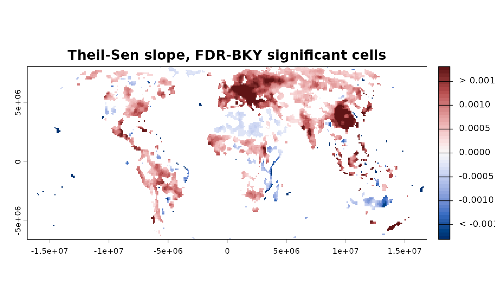

The graphical exploration counterpart to print()'s one-line
overview and summary()'s textual report – see print.sptrends()
for the full class list and the rationale for one shared entry
point per generic. What which (and any other named
argument) accepts depends entirely on x's own class – see the
sections below, grouped by what kind of result each class
represents.
Usage
# S3 method for class 'sptrends'
plot(x, ...)Arguments
- x
An object of class
"sptrends"(also one of"tst","rta","workflow_trends","trend_test","slope","prewhiten","fdr","spatial_autocorrelation","compare_detections","sptrends_simulation","sptrends_simulation_design", or"sptrends_benchmark"), fromworkflow_tst(),workflow_rta(),workflow_trends(),trend_test(),slope_estimator(),prewhiten(),fdr_correction(),spatial_autocorrelation(),compare_detections(),sim_trend_stack(),simulation_design(), orbenchmark_methods().- ...
Passed on to the underlying plotting logic – see each section below for the arguments (typically
which, and sometimesmethod,smooth,alpha, orpath)x's own class accepts.
Details
Function type: Reporting/derived function – visualises an existing result and does not alter or recompute its statistical analysis.
Typical use
result <- workflow_tst(x); plot(result) draws the class-specific default;
use which for an alternative diagnostic view where supported.
Methodological details
Published workflow: "tst".
By default, draws a binarised trend map: increases and decreases from
the selected trend statistic are retained only where the selected
multiple-testing procedure rejects the null hypothesis (see
direction_map()).
which – the default and the three main views:
which | Draws |
"direction" (default) | Binarised trend map after FDR correction |
"significance" | FDR-BH/FDR-BKY significance maps side by side |
"trend" | Uncorrected trend statistic/p-value/significance/direction |
"slope" | Theil-Sen slope, masked to significant cells |
which = "trend" draws uncorrected diagnostics only – see the
"Warning" section of ?trend_test before reporting significance
from this view. which = "slope" is the more reliable source for
per-cell direction/magnitude than the CMK statistic Sm, since
Sm's neighbourhood averaging can occasionally disagree in sign
with a cell's own Theil-Sen estimate in a spatially heterogeneous
neighbourhood (see "Display smoothing" below for how this view
handles that visually).
Eight further views, all uncorrected (no FDR, no significance masking) – diagnostics on the raw slope or the raw p-value, not a final result to report:
which | Draws |
"slope_map" | Continuous Theil-Sen slope, unmasked |
"slope_direction" | Binary sign of the slope, unmasked |
"slope_hist" | Histogram of slope values with a density curve |
"slope_bar" | Bar chart of positive/negative/zero slope counts |
"pvalue_map" | Continuous, uncorrected p-value |
"pvalue_significance" | Binary significant/not at alpha |
"pvalue_hist" | Classic binned histogram of p-values |
"pvalue_bar" | Bar chart of significant vs. not |
slope_map/slope_direction/slope_hist/slope_bar need
x$theil_sen (i.e. workflow_tst() must have been run with
theil_sen = TRUE); the four pvalue_* views always work, since
x$trend is never NULL. slope_bar/pvalue_bar accept
probability = TRUE for percentages instead of counts;
pvalue_significance uses alpha (default 0.05), uncorrected
for multiple testing.
method: "BKY" (default, matching workflow_tst()'s default
fdr_method) or "BH" – which correction to use for
which = "direction" or which = "slope". Ignored otherwise. If
x only has the other one (e.g. workflow_tst() was called with
fdr_method = "BH"), set method to match.
Published workflow: "rta".
By default, draws the map you actually want to report: direction of
change masked by FDR-BH significance (see direction_map()).
Unlike the "tst" case above, there is no method argument –
workflow_rta() always uses FDR-BH (see ?workflow_rta's "How RTA
differs from TST,
and why"), so there is nothing to choose between.
which: "direction" (default), "significance", "trend",
"slope", and the eight further slope_*/pvalue_* diagnostic
views – same meaning as the "tst" case above, but always
FDR-BH.
Configurable workflow: "workflow_trends".
Provides the same trend, slope, p-value, significance and direction
views, using whichever optional slope and FDR stages were selected.
Display smoothing ("tst"/"rta"/"workflow_trends",
which = "slope" only).
smooth: logical. If TRUE
(default) and x$theil_sen (x$slope for a "workflow_trends"
object – same mechanism, different field name) was not already
smoothed at source
(via workflow_tst()'s own theil_sen_args = list(smooth_neighbourhood = TRUE), which is not workflow_tst()'s own default – see
?workflow_tst's
"Computational considerations" section for why workflow_tst()
and workflow_rta() deliberately do not differ here), the
significant-cells-only slope map is smoothed with a queen-3x3 median
filter for this plot only; if it was already smoothed at source,
this is not applied a second time. x$theil_sen itself is never
modified by plotting, and neither is any part of the significance
decision; this only changes what gets drawn. Because smoothing here
runs after masking to significant cells (a necessarily sparser set
of cells than the full raster), the result can look visually
blockier than smoothing a dense, unmasked raster would – this is an
expected consequence of masking before smoothing, not a bug (see
.mask_and_smooth_slope()'s own na.policy = "omit" for the
related, and separate, fix ensuring a non-significant cell is never
itself painted with a colour). Setting smooth = FALSE when workflow_tst()
already smoothed at source cannot recover the unsmoothed values
(they were never kept) – a message explains this if it happens. The
plot title always states which stage (if any) applied smoothing, so
the display is never ambiguous about what it shows. See
?slope_estimator's "Optional queen-neighbourhood smoothing"
section for why this is a display convenience, not a validated
estimator, and is not applied to the value returned by workflow_tst().
Trend estimation: "trend_test".
which: "maps" (default), all four uncorrected diagnostic maps
(trend statistic, p-value, significance, and direction), via
trend_maps(); "histograms", histograms of the trend statistic and
p-value, via trend_histograms(). These are the uncorrected
result; see the "Warning" section of ?trend_test
before reporting significance from them without a multiple-testing
correction (see fdr_correction() and the "fdr" case below).
alpha: significance threshold, only used when which = "maps".
Trend estimation: "slope".
Draws the zero-centred diverging slope map; no which argument (only
one view exists for this class).
Diagnostic: "prewhiten".
which: "maps" (default), the four diagnostic maps; "histograms",
the two diagnostic histograms.
Diagnostic: "fdr".
which: "significance" (default), significance maps (raster input
only); "pvalue_histogram", histogram of the raw input p-values;
"comparison", bar chart comparing significant counts across
whichever of raw/BH/BKY/BY were actually requested;
"threshold", the BH vs. BKY step-up threshold plot (only if BKY was
requested).
Diagnostic: "spatial_autocorrelation".
Global results draw the null distribution with the observed statistic
marked. Local results draw the statistic, empirical z, raw permutation
p-value and exploratory raw-significance map. Apply and plot
fdr_correction() separately for BH, BKY or BY inference.
Validation: "compare_detections".
Intended mainly for simulation studies – not typically the plot an
analyst runs on a real dataset, since it needs a known ground truth
to have been scored against in the first place (see
compare_detections()).
A grouped bar chart of the comparison table – one group of bars per
method, one bar per metric; no which argument (only one view
exists for this class). metrics chooses which columns to plot
(defaults to all of them).
Simulation and benchmarking.
Simulation plots expose the known signal, slope, direction, breaks, or
complete raster series. Design plots show the number of levels per factor.
Benchmark plots show performance against a varying scenario factor using
lines with uncertainty, grouped bars, replicate boxplots, two-factor
heatmaps, or multi-metric profiles. Use metric, scenario, group,
facet, type, interval, and level to configure these views.
Confidence intervals use the between-replicate standard error and a
Student-t critical value; intervals for rates and powers are clipped to
their admissible range from zero to one.
See also
print.sptrends() for a concise overview and
summary.sptrends() for detailed textual output.
Examples
# \donttest{
# Annual mean NDVI from the bundled environmental dataset.
r <- read_ordered_stack(example_data("vhp_ndvi"))
#> Temporal order auto-detected with pattern '(19[0-9]{2}|20[0-9]{2})'.
#> Temporal order verification (mandatory, cannot be skipped):
#> stack_position detected_number file
#> 1 1982 VHP_SMN_annual_ndvi_1982.tif
#> 2 1983 VHP_SMN_annual_ndvi_1983.tif
#> 3 1984 VHP_SMN_annual_ndvi_1984.tif
#> 4 1985 VHP_SMN_annual_ndvi_1985.tif
#> 5 1986 VHP_SMN_annual_ndvi_1986.tif
#> 6 1987 VHP_SMN_annual_ndvi_1987.tif
#> 7 1988 VHP_SMN_annual_ndvi_1988.tif
#> 8 1989 VHP_SMN_annual_ndvi_1989.tif
#> 9 1990 VHP_SMN_annual_ndvi_1990.tif
#> 10 1991 VHP_SMN_annual_ndvi_1991.tif
#> 11 1992 VHP_SMN_annual_ndvi_1992.tif
#> 12 1993 VHP_SMN_annual_ndvi_1993.tif
#> 13 1994 VHP_SMN_annual_ndvi_1994.tif
#> 14 1995 VHP_SMN_annual_ndvi_1995.tif
#> 15 1996 VHP_SMN_annual_ndvi_1996.tif
#> 16 1997 VHP_SMN_annual_ndvi_1997.tif
#> 17 1998 VHP_SMN_annual_ndvi_1998.tif
#> 18 1999 VHP_SMN_annual_ndvi_1999.tif
#> 19 2000 VHP_SMN_annual_ndvi_2000.tif
#> 20 2001 VHP_SMN_annual_ndvi_2001.tif
#> 21 2002 VHP_SMN_annual_ndvi_2002.tif
#> 22 2003 VHP_SMN_annual_ndvi_2003.tif
#> 23 2004 VHP_SMN_annual_ndvi_2004.tif
#> 24 2005 VHP_SMN_annual_ndvi_2005.tif
#> 25 2006 VHP_SMN_annual_ndvi_2006.tif
#> 26 2007 VHP_SMN_annual_ndvi_2007.tif
#> 27 2008 VHP_SMN_annual_ndvi_2008.tif
#> 28 2009 VHP_SMN_annual_ndvi_2009.tif
#> 29 2010 VHP_SMN_annual_ndvi_2010.tif
#> 30 2011 VHP_SMN_annual_ndvi_2011.tif
#> 31 2012 VHP_SMN_annual_ndvi_2012.tif
#> 32 2013 VHP_SMN_annual_ndvi_2013.tif
#> 33 2014 VHP_SMN_annual_ndvi_2014.tif
#> 34 2015 VHP_SMN_annual_ndvi_2015.tif
#> 35 2016 VHP_SMN_annual_ndvi_2016.tif
#> 36 2017 VHP_SMN_annual_ndvi_2017.tif
#> 37 2018 VHP_SMN_annual_ndvi_2018.tif
#> 38 2019 VHP_SMN_annual_ndvi_2019.tif
#> 39 2020 VHP_SMN_annual_ndvi_2020.tif
#> 40 2021 VHP_SMN_annual_ndvi_2021.tif
#> 41 2022 VHP_SMN_annual_ndvi_2022.tif
#> 42 2023 VHP_SMN_annual_ndvi_2023.tif
 #> Stack built: 42 layers, 146 x 338 cells.
#> >> [read_ordered_stack()] elapsed: 0.06 s
result <- workflow_tst(r, report = FALSE, verbose = FALSE)
# Default map: direction of change (greening/browning/no change),
# masked by FDR-BKY significance -- cells with grey are not
# significant, so they are left out of the coloured pattern.
plot(result)
#> Stack built: 42 layers, 146 x 338 cells.
#> >> [read_ordered_stack()] elapsed: 0.06 s
result <- workflow_tst(r, report = FALSE, verbose = FALSE)
# Default map: direction of change (greening/browning/no change),
# masked by FDR-BKY significance -- cells with grey are not
# significant, so they are left out of the coloured pattern.
plot(result)
 # The rate of change (not just direction) among significant cells,
# queen-3x3 median smoothed for display (the default for this view).
plot(result, which = "slope")
# The rate of change (not just direction) among significant cells,
# queen-3x3 median smoothed for display (the default for this view).
plot(result, which = "slope")

# }